How a sole user researcher at Playsimple proposed and shaped a new meta-system for Crossword Jam, a free-to-play word game with 10M+ downloads — built on the 4th Octalysis drive and scoped to ship inside a live product's 6-month plan.
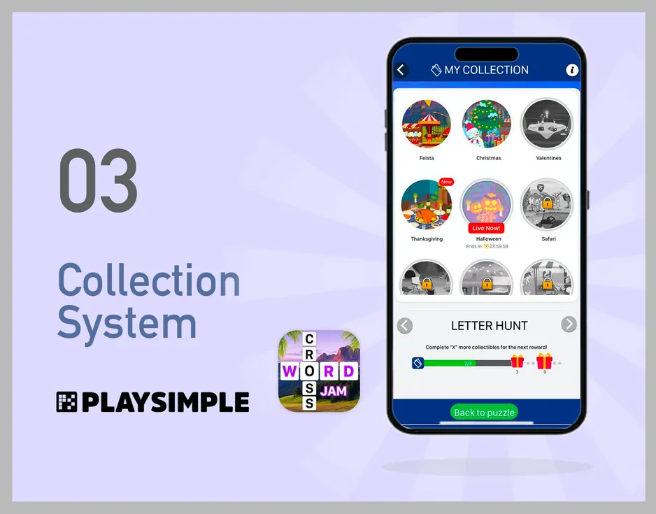
Crossword Jam is a long-running casual word game at Playsimple, running a steady cadence of events and tournaments. Players were playing — a lot — but at the system level, there was no meaningful ownership.
Avatars, badges, a scrapbook — these existed, but as generic and weak ownership mechanics. When a limited-time event ended, the rewards it generated disappeared with it. There was no trophy shelf. No place to look back. No way to show another player what you'd done.
Casual free-to-play games typically run on three nested loops. The core loop is the puzzle itself — 30 seconds to a few minutes. The session loop strings puzzles together through lives and energy. The meta loop is where ownership, progression, and narrative live — measured in weeks and months. The first two are tight and well-studied across the industry. The third is where games either hold a player past their first month or leak them quietly into the uninstall stack.
Crossword Jam's core and session loops were healthy. The meta was thin. Events would run, produce rewards, and then dissolve — the rewards evaporating with the event window. Across a 12-month player arc, someone could earn hundreds of collectibles and end up with nothing tangible to point at. That's psychologically inverted from how human effort actually works: we expect accumulation. We expect to be able to see what we made.
In a hardcore RPG the meta-layer fills itself — character progression, inventory, tier advancement, achievements, leaderboards. Casual word games deliberately strip those mechanics out; they'd alienate the 45+ audience the game was built for. Which means the designer has to add ownership back in, carefully, as a separate layer — heavy enough to register, light enough not to pull the game out of the "casual" shape the audience already liked.
Yu-Kai Chou's Octalysis framework reads a game along eight motivational drives. Each drive can be scored across five levels of intensity; the composite surfaces where a design over-indexes and where it's starving the player. Used as an audit tool, it turns an argument from "this feature would be cool" into something structural: "which drive are we actually strengthening, and at what cost to the others?"
The three balance axes told the same story from three angles. Crossword Jam sits comfortably on White Hat / Black Hat (growth and mastery vs loss aversion and urgency) — no dramatic imbalance to correct. Left / Right Brain (extrinsic rewards vs intrinsic curiosity) was also near even. Intrinsic / Extrinsic motivation likewise balanced. The foundation was healthy. The sag wasn't on any axis — it was a specific, localized hole on Drive 4.
Drive 4 maps to a well-documented phenomenon from behavioral economics: the endowment effect (Thaler, 1980). People assign more value to things they possess than to identical things they don't. Once a player owns a puzzle-set or a tournament trophy inside the game, its mere presence deepens their attachment to the game — independent of any gameplay utility the object provides. The designer's job is just to set up the conditions for ownership to register: persistence, visibility, social legibility.
But there's a trap right next to it. Deci & Ryan's Self-Determination Theory shows that badly-deployed extrinsic rewards can erode intrinsic motivation — the overjustification effect. Start paying someone to do something they already enjoyed, and they may enjoy it less. For Crossword Jam this was a live risk: a meta-layer that turned word-solving from "fun puzzle" into "chore for collectible #127 of 200" would hurt the exact engagement it was trying to reinforce.
Each gap below is a small leak in retention. Individually, none of them churn a player — casual audiences are forgiving. Collectively, they shape a game that works in time windows the player's memory doesn't share. The gaps sort into primary (what the player feels directly) and secondary (what the system fails to do).
Primary gaps
All three share one pattern: failures of persistence. The game runs on a clock; the player's sense of self doesn't. The player's relationship to the game is cumulative, but the game's memory of the player resets every event.
Secondary gaps
The secondary gaps are architectural. The game has many events, but they don't talk to each other. Nothing compounds. Every event is a standalone spike of engagement followed by a decay back to baseline — exactly the kind of pattern that produces strong short-term KPIs and weak long-term retention.
The feature had to sit in a careful middle. Too rewarding and extrinsic motivation starts to crowd out play (the overjustification risk from SDT). Too invisible and nobody registers it. The objectives were written around that tension — each one worded to satisfy a user need without overpaying for it.
A central Collection screen within Crossword Jam where all earned items — event rewards, tournament backgrounds, puzzle sets — live permanently. Each entry points back at the event that produced it, closing the loop between playing now and looking back later. Introducing this system is directly tied to strengthening the 4th Octalysis drive (Ownership) without pulling resources from the other seven.
Architecturally, the Collection System is a retrieval layer, not a generation layer. It doesn't issue new rewards — it organizes and preserves rewards that other systems already produce. This is a deliberate design choice, and it unlocks three properties at once:
Each player archetype gets something out of the same system, without the designer having to build four parallel features. The completionist gets a progress surface. The Bartle-socializer / exhibitor (the "displayer" from the gap analysis) gets a showcase when collections become comparable. The casual passer-through gets a soft reason to come back ("there's something new to look at"). And the lapsed player — returning after two months — gets proof their past self was here, which reduces the re-onboarding cost of "why am I doing this again?". All from one layer.
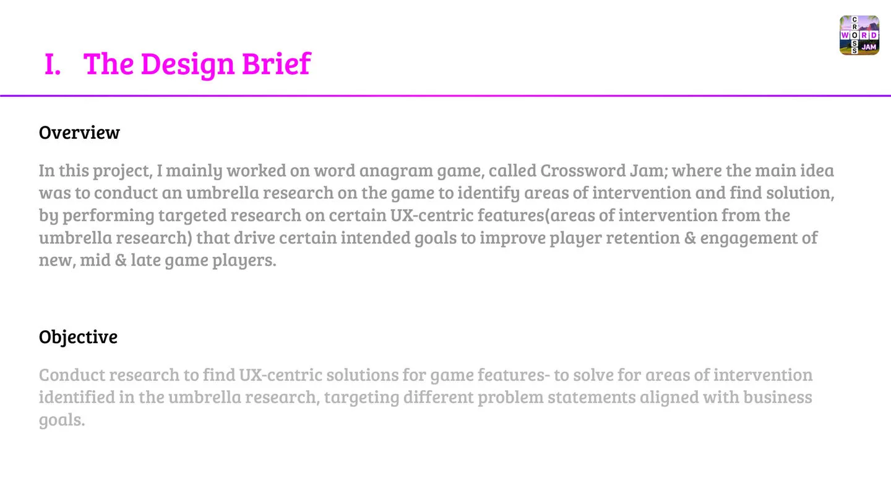
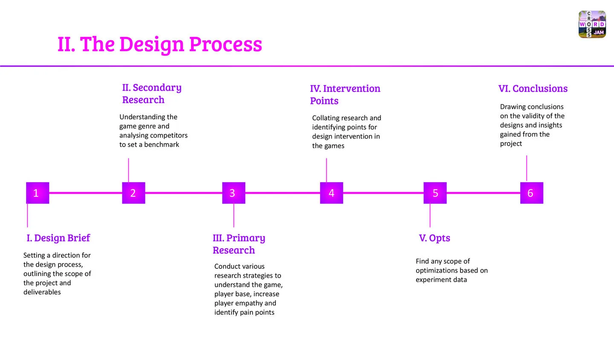
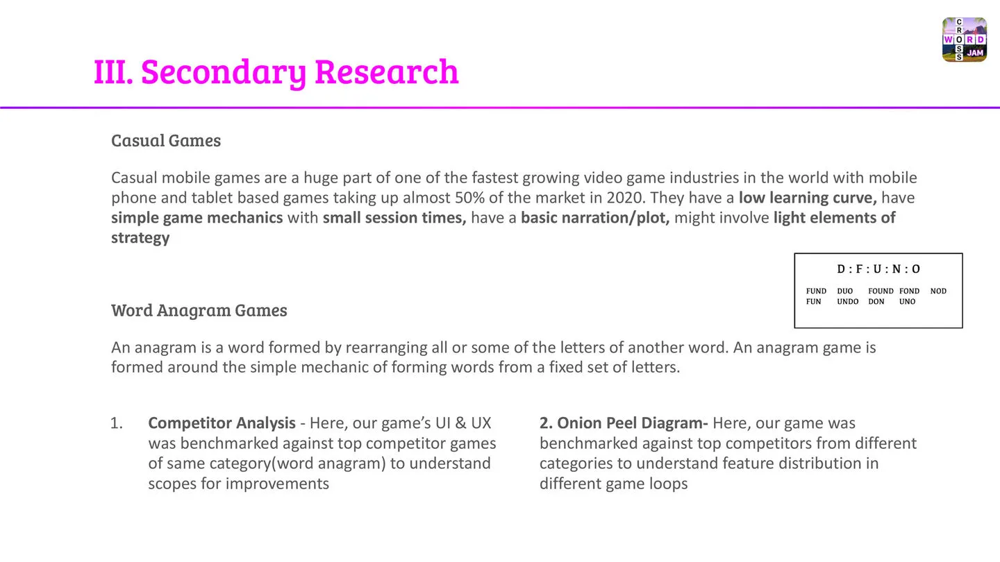
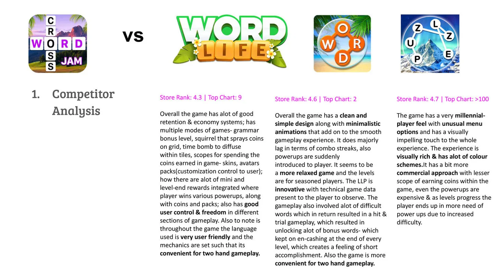
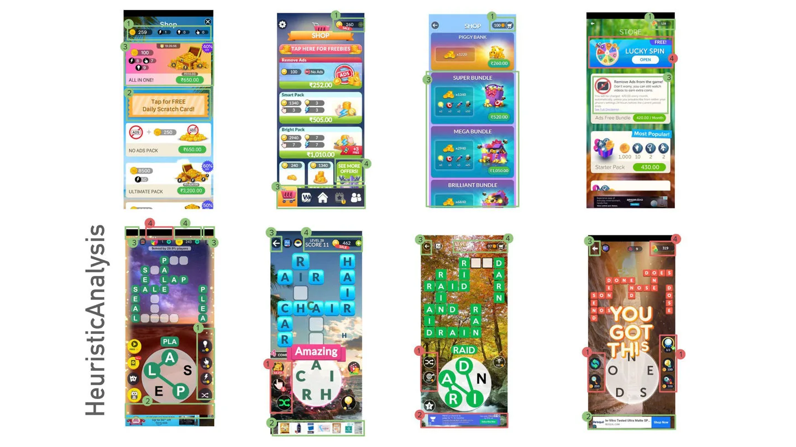
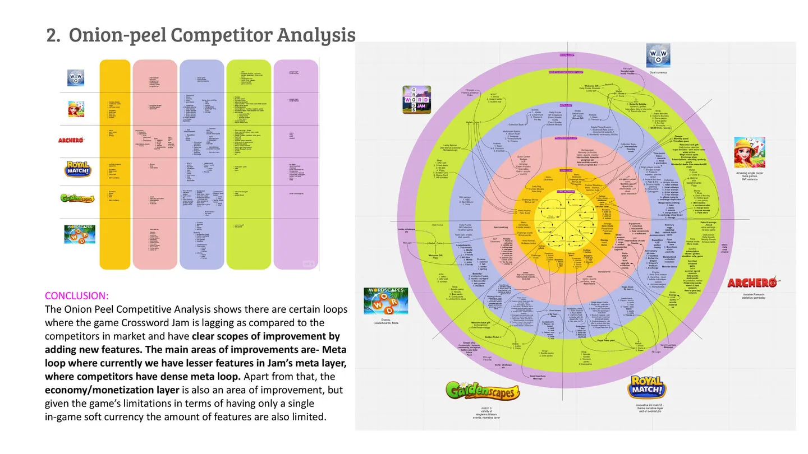
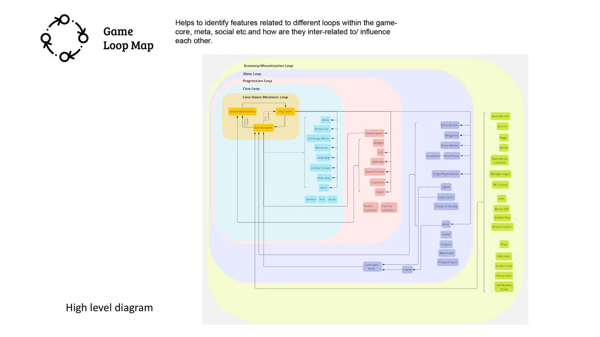
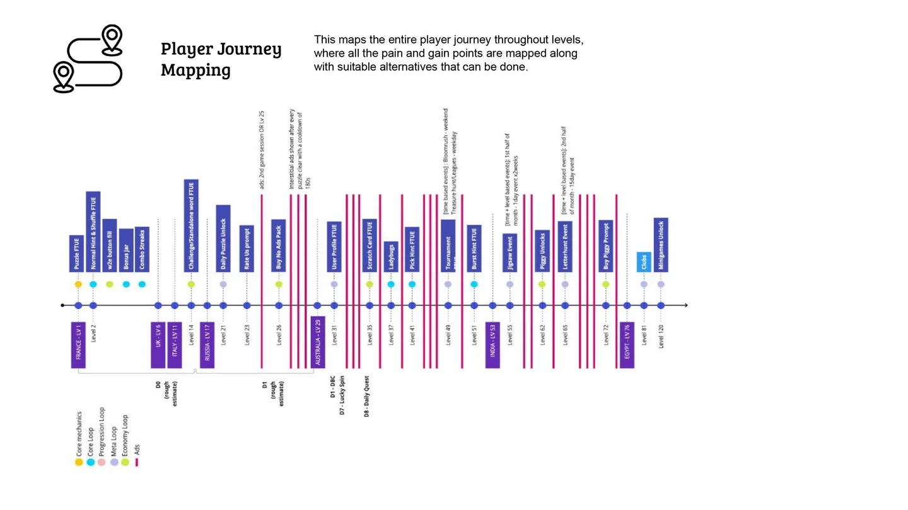
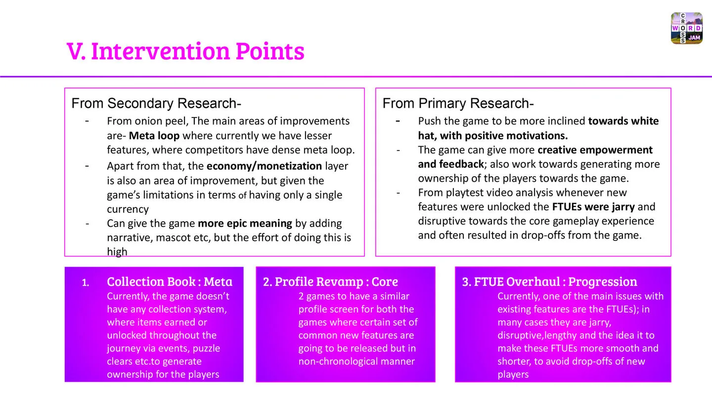
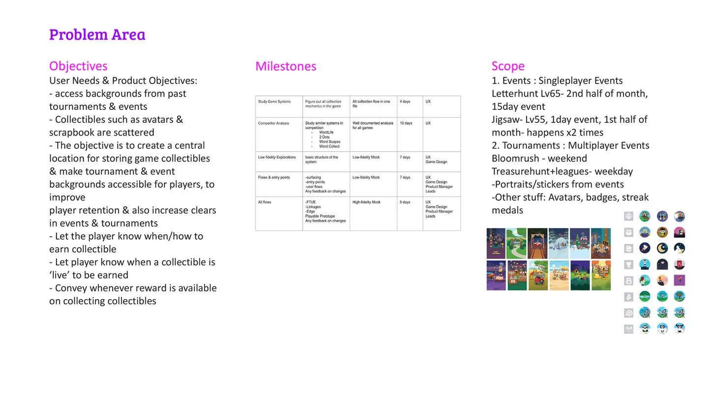
Scope was designed along three temporal rhythms, chosen deliberately. Weekly cadence (Letter Hunt, Treasure Hunt) builds habit — players form a repeat visit pattern almost without noticing. Monthly cadence (Base events, Theme events) creates anticipation — enough gap between instances that each one feels fresh. Quarterly cadence (Jigsaw) creates surprise — rare enough that the event itself is an occasion. The Collection System had to absorb all three rhythms without privileging any one of them, which made the interface design question "does this page read equally well for a daily visitor, a weekly visitor, or a player opening it after a month away?"
The listed eight event types define scope for day one. But scope for the feature's life is broader: every future event plugs into the same registration surface, meaning event #9 — whatever it ends up being — inherits the meta-layer for free. The contract between the event system and the Collection is the actual shipped artifact. The eight event-specific flows are just the first instances of that contract.
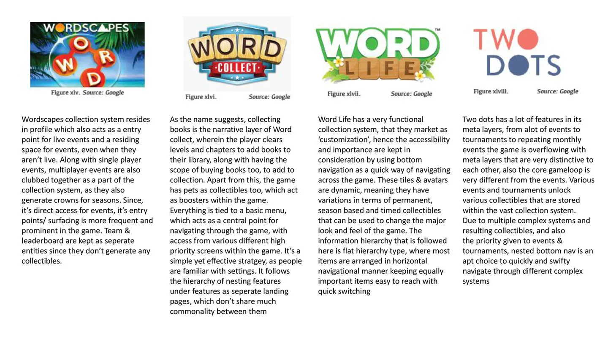
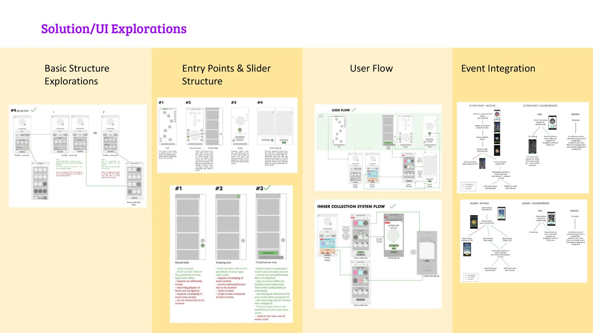
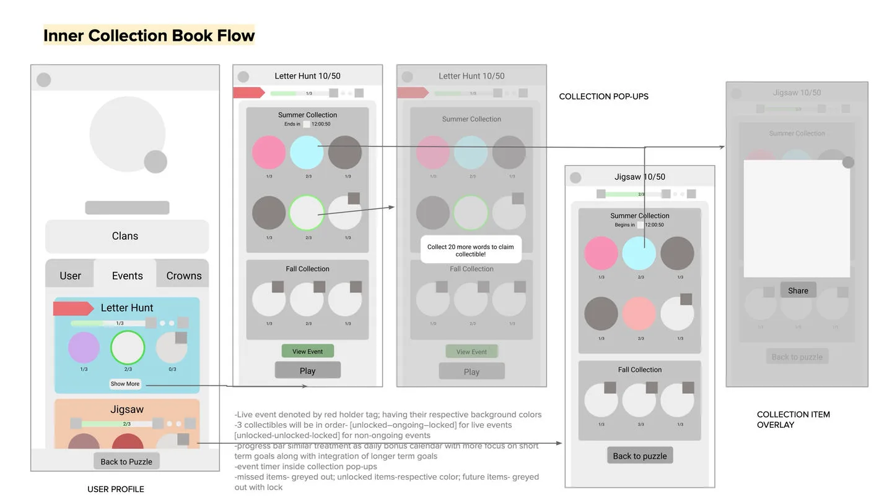
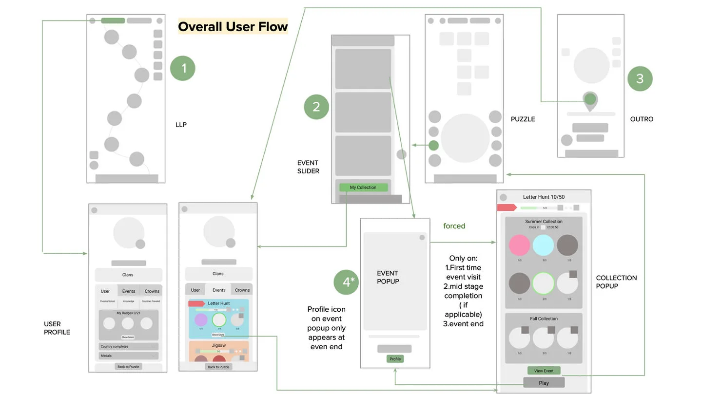
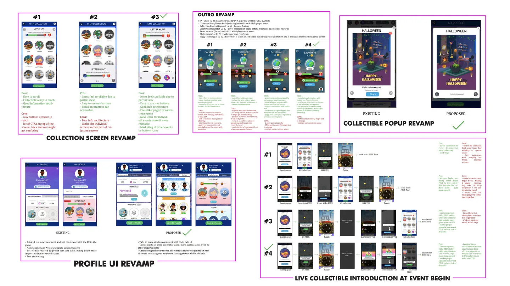
The Collection System was proposed during the 6-month planning cycle, accepted, and prioritized through the product iterations that followed — a concrete feature born from a sole user researcher mapping a long-term ownership gap inside a live F2P title serving 45+ global players.
The durable win, though, sits one layer deeper than the feature itself. Naming the drives explicitly converted a subjective design argument — "this feature would be cool" — into a structural one: "this feature strengthens Drive 4, which is our weakest drive, without damaging Drive 2 or Drive 7." That shift matters more than the score. When a single user researcher is embedded on a game team, the distinction between being consulted and being decisive is load-bearing.
Casual F2P titles rarely maintain an active user research function. When they do, the dividend is almost never usability tweaks — it's meta-layer design. The Collection System is a small, specific example of what a research-aware casual game looks like when meta is given the same rigor as the core loop: an Octalysis audit, an endowment-effect-shaped solution, an SDT-aware restraint.